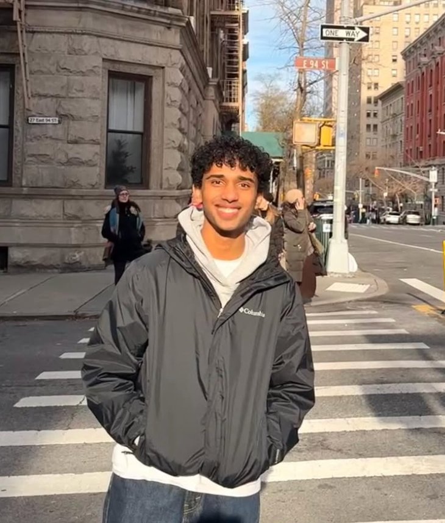
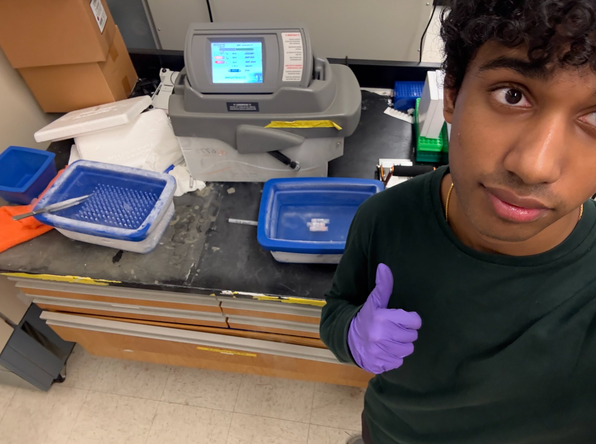
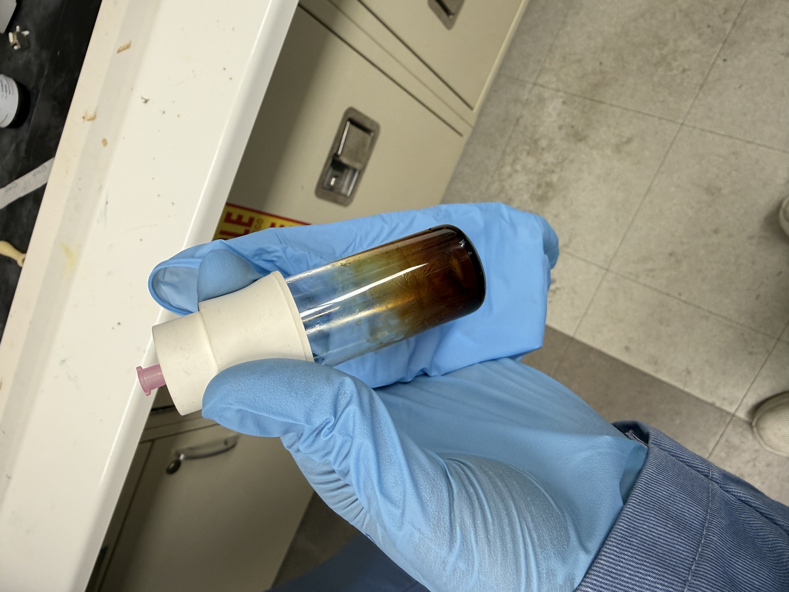
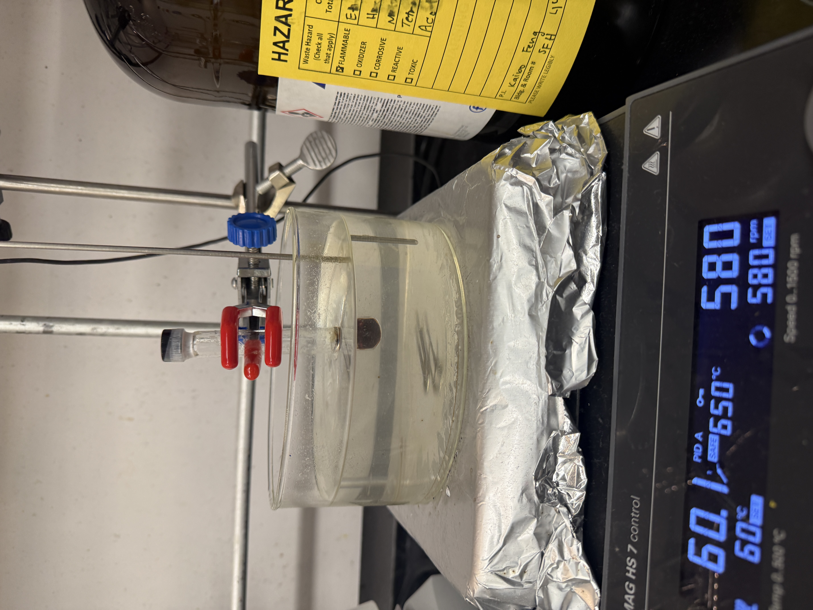

Pre-Medical Student pursuing Microbiology with a focus on Pediatric Medicine and Clinical Research
vishegu.aadithyaa@gmail.com
targenti@ufl.edu
(904) 392-0700
I'm currently a sophomore at the University of Florida pursuing a B.S. in Microbiology and Cell Science with a minor in Early Childhood Studies. I'm working toward a career in pediatric medicine!!
February 2026 – Present
I'm assisting in organic chemistry research focused on improving aryne generation from aryl triflates using non-competitive bases, including proton sponge-derived methods. I prepare reaction substrates and evaluate how different bases affect reaction efficiency and selectivity under mild conditions.
January 2025 – Present
I gained research experience through conducting literature reviews and proposals with guidance from professors. I created proposals evaluating the efficacy of diastolic parameters as an indicator of transplant coronary artery disease (TCAD), and I'm currently testing an interactive 3D-model of an anxiety-minimizing ablation procedure to educate kids and their families.
July 2025 – August 2025
I learned the preparation of tissue samples through SPEX sample prep machine and gained experience in Western-blotting and micropipetting.
January 2025 – May 2025
I gained research experience through conducting research proposals with guidance from a professor. I created proposals for testing variability in temperature and microhabitat on the physiology and presence of Brown Anoles (Anolis sagrei), gained experience in R through statistical analysis, and gained hands-on experience through capturing anoles in fieldwork.
Cumulative GPA: 3.98/4.00
Honors: President's Honor Roll (Multiple Semesters)
Fall 2024
Coming into UF, I wasn't totally sure what pre-med would look like beyond the obvious coursework and shadowing hours everyone talks about. Fall semester threw me into general chemistry, microbiology, and my first real exposure to what college-level science actually is like. I started volunteering in the PCICU in January, and it completely shifted how I think about medicine. Spending time with kids during their stay at the hospital is so fulfilling.
Spring 2026
Sophomore year has been about figuring out how to balance everything without burning out. Between biochemistry, lab, two early childhood education courses, and as Dream Team President, I've had to get a lot better at managing my time and energy. The workload is heavier than last year, but I'm also more confident in how I approach studying and how I prioritize what actually matters versus what just feels urgent.
Leading Dream Team has been the biggest learning curve. Managing application cycles with hundreds of people, coordinating with hospital staff, and making sure our volunteers are actually providing value to the units requires a completely different skill set than doing well in classes or running experiments in the lab. I'm learning how to delegate, how to communicate clearly with people who have different priorities, and how to make decisions when there's no obvious right answer. It's been challenging, but it's also the part of college I'm most proud of so far.
A collection of moments from my academic journey, clinical experiences, and personal interests.




Dream Team volunteering at UF Health Shands Children's Hospital
Audio Engineering Society music production sessions